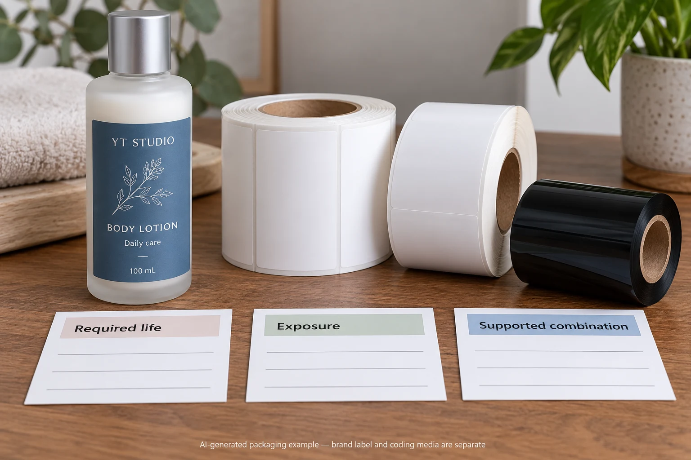
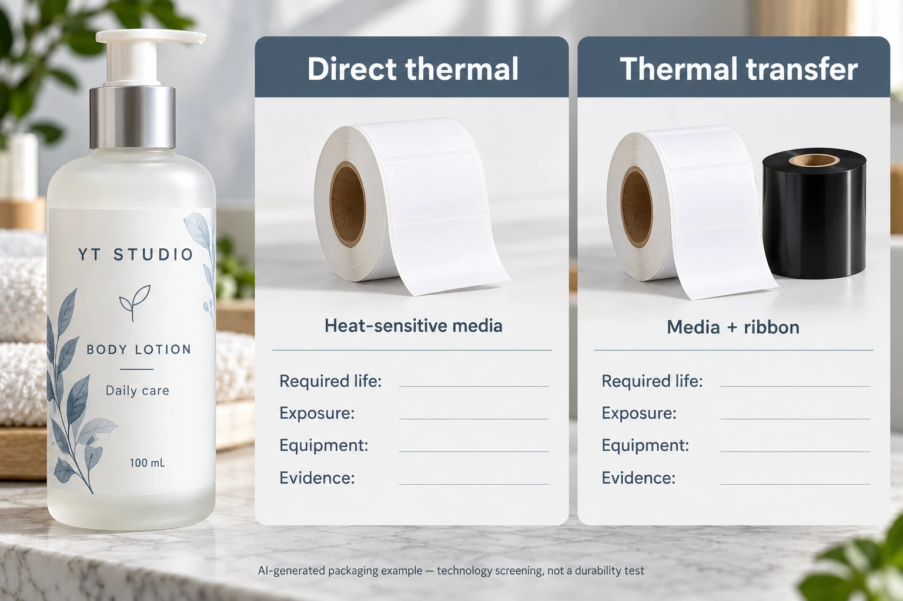

A production team needs variable identification on a cosmetic pack. One proposal removes the ribbon. Another specifies a ribbon and receiving material. The useful first question is what the printed information must survive, on which label, and for how long it must remain useful.
Choose between direct thermal and thermal transfer around that documented task and a supported equipment/material combination. Direct thermal creates an image in heat-sensitive media without a ribbon. Thermal transfer uses a ribbon to transfer an image onto a receiving material. That difference matters, but neither name alone qualifies a finished label for a specific cosmetic bottle.

Identify the mark before choosing the technology
Distinguish a short-lived internal identification label from a product label that travels through distribution and remains on the pack during use. Identify the variable content, receiving surface and the person who depends on it. A readable warehouse reference today does not answer whether an on-pack code remains readable during the required product lifecycle.
Write the required life as the actual task: until an internal transfer is completed, through a defined distribution route, or throughout an agreed use period. Obtain that requirement from the responsible business or quality owner. Do not invent a universal number of months from the printer category.
Record credible exposures, including relevant light, heat, handling and contact. Separate observed conditions from assumptions. A hypothetical carton reference kept briefly indoors can justify a different investigation from an identification label on a frequently handled shower product. The product type suggests questions; it does not supply a test result.
Understand what the method changes
Direct thermal uses heat-sensitive media, while thermal transfer uses a heated ribbon to form the image. SATO's comparison makes the required label life and environmental conditions central to the choice, including exposure such as direct sunlight or chemical contact. That is a screening reason to investigate exposure, not a promise that every direct-thermal grade fails or every transfer combination lasts indefinitely.
Specialty materials and protective treatments can change the options. Ask for the exact construction and the supplier's intended application. A statement about a supported product family should stay attached to that product family, rather than becoming a claim about every material printed by the same technology.
Thermal transfer also adds a compatibility decision: printer, ribbon and receiving surface have to work together. Once that route is selected, the ribbon compatibility guide explains how to compare the actual combination. That later qualification is separate from deciding whether transfer printing is the appropriate route in the first place.
Compare operational scope as well as consumables
Removing a ribbon can remove one consumable and a changeover task. It does not automatically lower total operating cost. Media cost, supported equipment, waste, downtime and the consequences of an unreadable mark belong in the same comparison. Use site records or quotations; this article gives no price, output rate or savings percentage.
Conversely, carrying a ribbon does not establish a durability advantage large enough to justify every project. If an identified direct-thermal construction meets the task in representative conditions, compare that supported option on its actual merits. Avoid purchasing complexity simply because a longer equipment specification sounds more professional.
For an existing printer, obtain the model, supported modes and material requirements from its owner or manufacturer. Do not assume a machine can switch technologies because two sample labels have the same dimensions. The final label construction also needs to fit the intended application path.
Use a technology decision sheet
| Input | What to record | What it changes |
|---|---|---|
| Information task | Content, user and consequence of unreadability | How critical the mark is and who owns acceptance |
| Required life | Business-defined end point or use period | Whether a short-lived reference is an adequate analogy |
| Exposure | Documented light, heat, handling and relevant contact | Which material evidence and trial conditions are needed |
| Construction | Exact proposed direct-thermal media or transfer media/ribbon | Whether evidence belongs to the offered combination |
| Equipment | Printer model, supported mode and receiving requirements | Whether the proposed route is operationally available |
| Trial and criteria | Representative specimens, agreed observations and decision owner | How the option will be accepted or held |
| Total scope | Material, consumables, changes and operating responsibilities | Whether cost comparisons include the same task |

Complete the task and exposure fields before asking suppliers to recommend a construction. Have the equipment owner confirm the supported route. Then request evidence relevant to the exact option and identify any conditions it does not cover.
Agree a representative trial with the people responsible for the mark and the process. Preserve the sample identity, setup reference, observations and acceptance criteria. Where a barcode is involved, reading a sample with a phone is not a substitute for the required print-quality verification. Use the existing barcode checklist to separate the symbol's production requirements from this technology choice.
Stop release if the required life has no owner, a relevant exposure is missing from the evidence or the proposed material is not supported by the identified equipment. A promising sample can remain a candidate while those gaps are resolved. Do not turn an unqualified example into a purchase specification.
Compare two sensible outcomes
Imagine an internal identification label used through one short, controlled operation. The team has a supported direct-thermal printer and can define the relevant conditions. A representative material review may support that route without introducing a ribbon.
Now imagine an on-pack code that must remain useful through distribution and repeated handling. The team has not established its exposure envelope. It needs a wider construction and process review before accepting either method. Thermal transfer may be a useful candidate, but its ribbon and surface still need qualification. These scenarios are hypothetical decisions, not customer cases or performance claims.
For cosmetic bottle labels, provide the container, label task, variable content, required life, exposure information, printer model and quantity per version. Ask which supported constructions can be considered and what representative samples and evidence are available. This guide does not claim that YT supplies every printing technology or equipment model.
Use the inquiry form to prepare a message. Send equipment and material references separately by email or WhatsApp; the form does not upload attachments. Settle the working-life requirement before comparing two consumable prices.
Source: SATO's direct thermal and thermal transfer comparison. Technology descriptions support the screening questions; no universal lifetime or cosmetic-use approval is inferred.